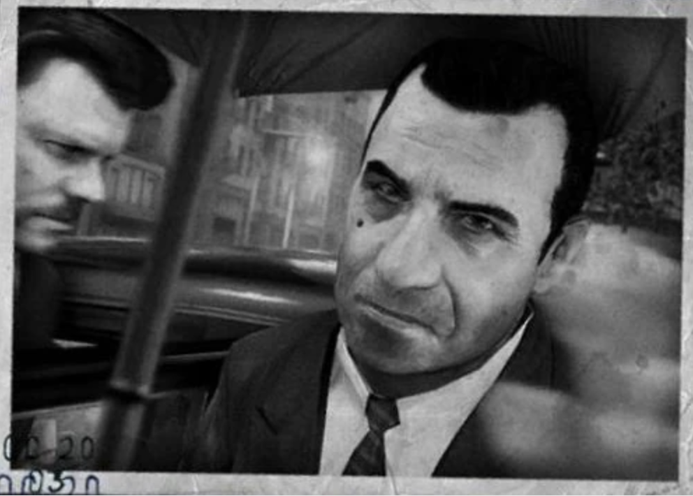
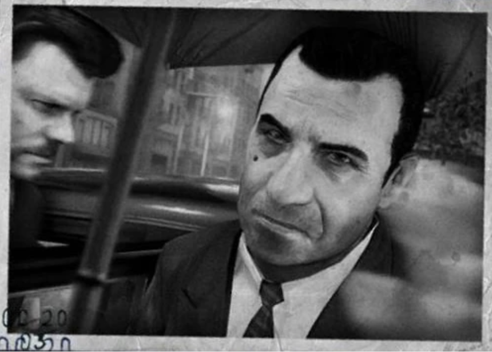

Карло Фальконе, как известно, является влиятельным филантропом в городе. Он также является владельцем бара «Мальтийский Сокол». Талантливый стратег и ценитель прогресса, Карло ни в грош не ставит традиции сицилийской мафии. Он понимает, что мафия разбогатела на «сухом законе», а следовательно, чтобы оставаться на плаву, ей нужен сопоставимый источник дохода. Втайне от всех он занялся поставками наркотиков, однако некоторые люди (одним из них был Лука Гурино) узнали об этом. Лука предпринял попытки натравить семью Винчи на семью Фальконе. В 1951 году Карло принимает в свою семью Вито Скалетту и Джо Барбаро. После того как Винчи узнал о том, что тот занимается наркотиками, Карло дал приказ «убрать» сначала Лео Галанте, а потом и Фрэнка Винчи. Однако убрали его самого: 26 сентября 1951 года Карло Фальконе был убит Вито и Джо в своей обсерватории.
Обратно
 
